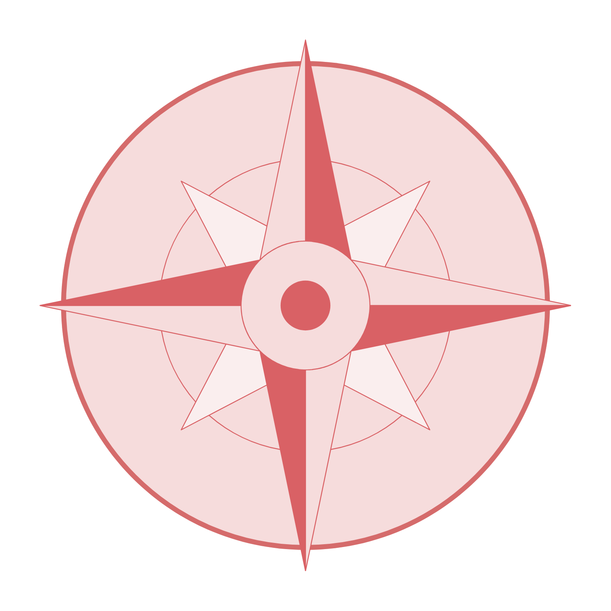
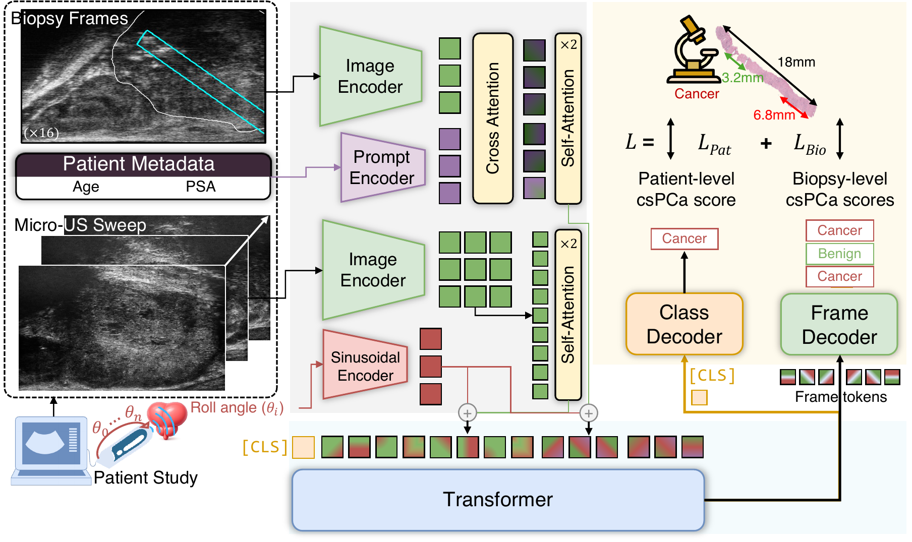

Compass:
Prostate Cancer Detection Needs Multi-View Context
TL;DR - We introduce Compass, a study-level micro-ultrasound framework that jointly reasons over rotational prostate sweeps and biopsy frames. By conditioning mixed-evidence transformer aggregation on probe roll angle, Compass improves patient-level clinically significant prostate cancer detection.
